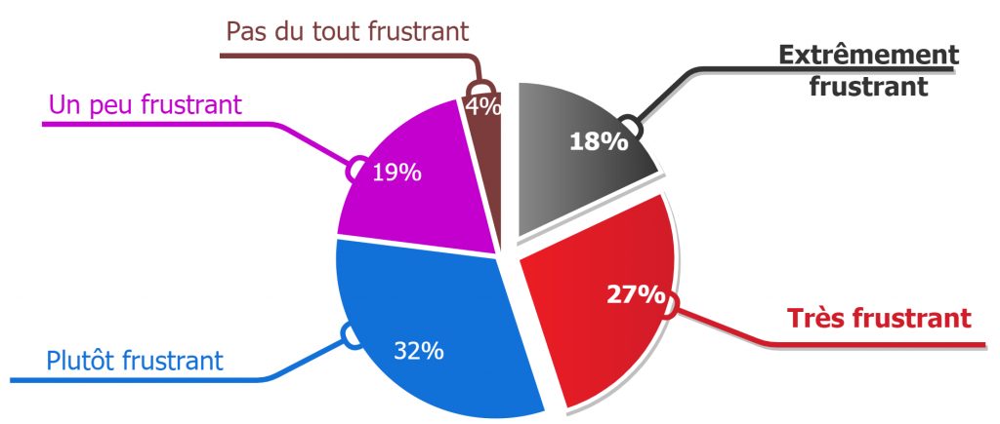

Accessibilité dans les jeux vidéo : Pourquoi est-ce important ?
Des consommateurs potentiels qui attendent des solutions
Beaucoup de jeux ne sont pas satisfaisants sur le plan d’accessibilité. Pourtant, en comptant plus d’un milliard de personnes en situation de handicap dans le monde, ce sont clairement des consommateurs potentiels qui, de nos jours, ne trouvent malheureusement pas beaucoup de solutions pour jouer à leurs jeux favoris, certains vont jusqu'à abandonner les jeux vidéo à cause du manque d'accessibilité, c’est donc un enjeu énorme d’inclure ces personnes dans le monde des jeux vidéo.
Quelques graphiques
L'entreprise "Be player One" a réalisé en 2021 un questionnaire en ligne permettant aux joueurs et aux joueuses en situation de handicap de s'exprimer leurs frustrations et leurs attentes vis à vis des jeux vidéo.
L'analyse des données se porte sur 331 réponses des joueurs et des joueuses en situation de handicap.
Les principales raisons qui empêchent de profiter les jeux vidéo
100% des participants pensent que les jeux ne sont pas accessibles.

- 100% : Les jeux ne sont pas accessibles
- 61% : Manque d'informations sur les fonctions d'accessibilité des jeux vidéo
- 59% : Pas de matériel de jeu adapté à leur situation
- 27% : Une solution de jeu adaptée à leur situation coûterait trop cher
- 17% : Pas trouvé de prestataire en capacité de les accompagner
Niveau de frustration sur l'accessibilité des jeux vidéo
77% des participants trouvent que les jeux vidéo sont frustrants sur le plan d'accessibilité.
- 18% : Extrêmement frustrant
- 27% : Très frustratnt
- 32% : Plutôt frustrant
- 19% : Un peu frustrant
- 4% : Pas du tout frustrant
Opinion de l'existence de l'accessibilité dans les jeux vidéo
77% des participants trouvent que l'accessibilité est insuffisante dans les jeux.

- 14% : Inexistant
- 63% : Insuffisant
- 18% : Acceptable
- 1% : Excellent
- 4% : Ne savent pas
Est-ce que tous les jeux peuvent devenir accessibles ?
Non, car il existe des jeux qui sollicitent un sens en particulier et il sera très difficile voire impossible d’y jouer si on n’a plus d’accès à ce dernier : Jeu de simulation de pilotage, il est claire que l’aspect visuel est primordial, quand il y a une vingtaine de signaux qui clignotent simultanément, il est difficile pour une personne ayant une déficience visuel d’en percevoir. C’est ce qu’on appelle un jeu à expérience sensorielle spécifique. En revanche, il faudra rendre le jeu accessible dès que possible. “L’idée n’est pas de les laisser piloter l’avion, mais plutôt les faire monter dès que possible”.